VIZ_EXCEL_Oenardi_083124
Choosing the source and dataset
- The source that I chose for this class is the Federal Reserve Economic Data (FRED), with the link: https://fred.stlouisfed.org/.
I chose the FRED source because I would like to delve more into the US economy to conduct economic analysis and financial research as a business major. Additionally, there are a lot of different datasets, including from different countries, that I an explore from the source.
- For this assignment, I used ChatGPT to brainstorm on which dataset I should choose from and why.
After using ChatGPT and exploring the source website some more, I decided to choose the dataset containing Corporate Profits by Industry with this link: https://fredaccount.stlouisfed.org/public/datalist/6257. I downloaded the whole data lists, as it all involves the relevant corporate profits of different industries and sub-sectors.
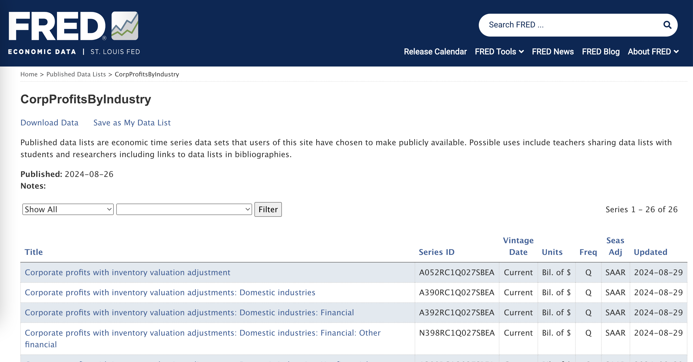
- I think that it would be interesting to visualize how the different industries’ profits vary throughout the years, and whether there are correlations between any industries. I downloaded the dataset as Excel format.
Context of the dataset
The dataset contains quarterly data on the corporate profits with inventory valuation adjustment for different industries, including non-financial, financial, federal, and many other sub-categories such as manufacturing, wholesale trade, and utilities. The data is presented in billions of dollars, seasonally adjusted annual rate. To set parameter, the study for this assignment only looks at the 10 year span from first quarter of 2014 to the first quarter of 2024.
Cleaning and organizing the dataset
- Replacing Series ID with Titles
The dataset contains columns with Series ID instead of titles. Therefore, it needs to be replaced with the titles, which can be viewed in the other sheet in the same Excel document. - To do this, I copied the first Series ID and paste it on the ‘Find’ tool.
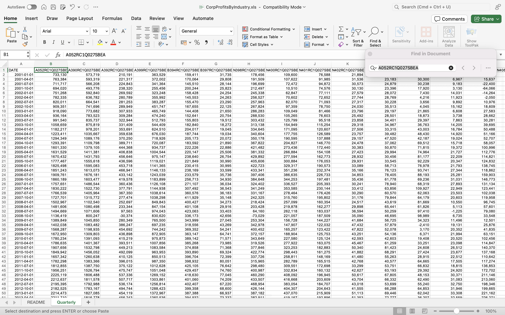
- Then, I go to the other sheet in the same Excel document to find the same Series ID and locate the title
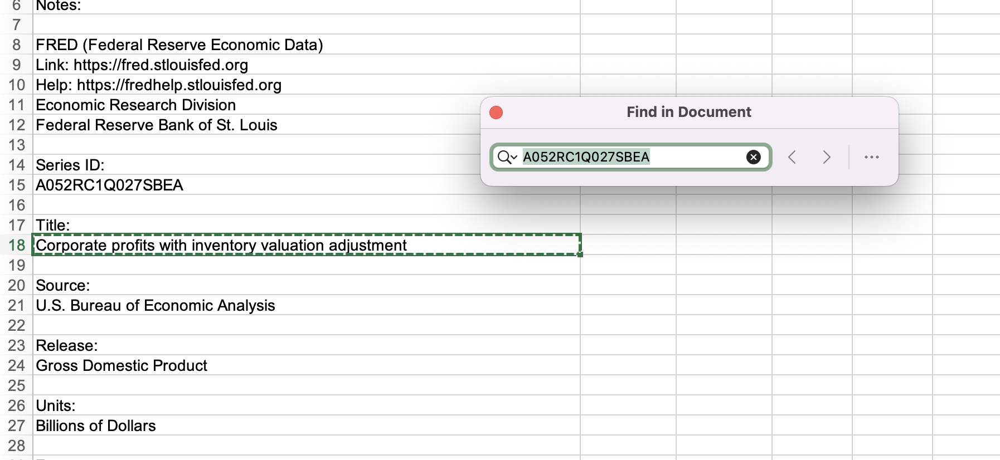
- After locating the title, I copied it and paste it on the dataset sheet to replace the Series ID with the right title.
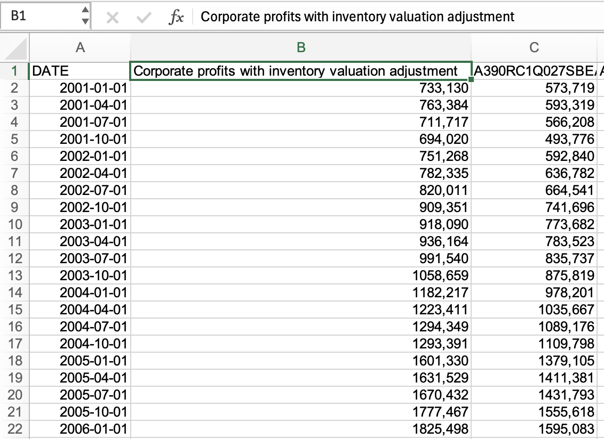
- Repeat this until all other Series ID are replaced with its title
Making the titles more concise When copy and pasting back the titles to the dataset sheet, I realized that the titles are very long and repetitive. Therefore, I reorganized the title and make it shorter and more concise.
Formatting the columns to be more organized and neat To do this, I expanded the columns to the right width, and centered the text. Additionally, I also deleted the rows with data outside of the 10 year span from 2014 to 2024, as it is outside the parameter of the this exploration.
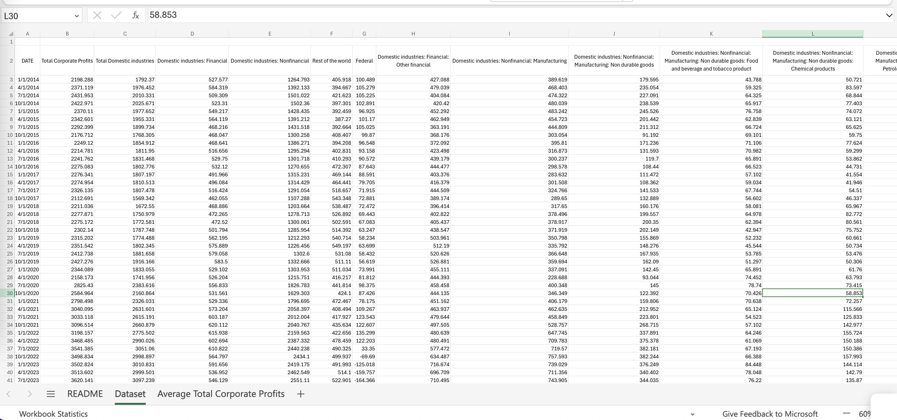
Making Visualizations
In making visualizations, I utilized Excel’s ‘Recommended Charts’ tool under ‘Insert’. After using the tool, I looked over the data and explore to create more meaningful visualizations on my own.
Line chart: Average Total Profits in 10 Years
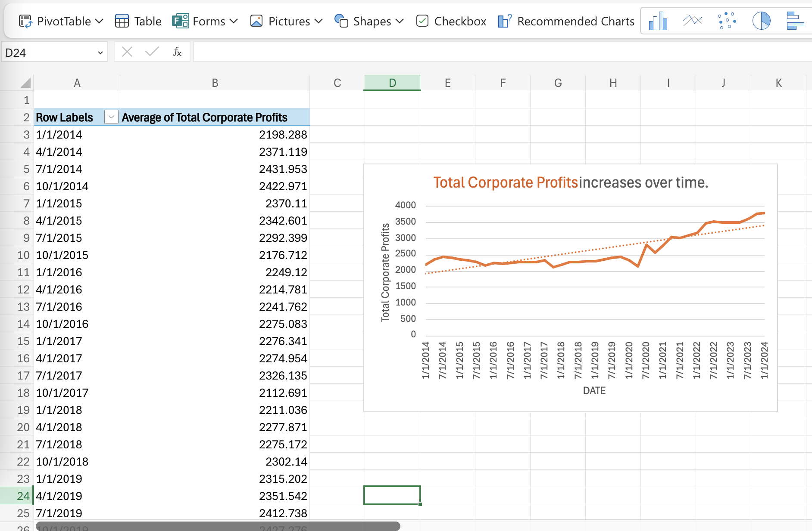
When I added a graph from the ‘Recommended Charts’, a new sheet is created along with corporate profits summed into yearly instead of quarterly.
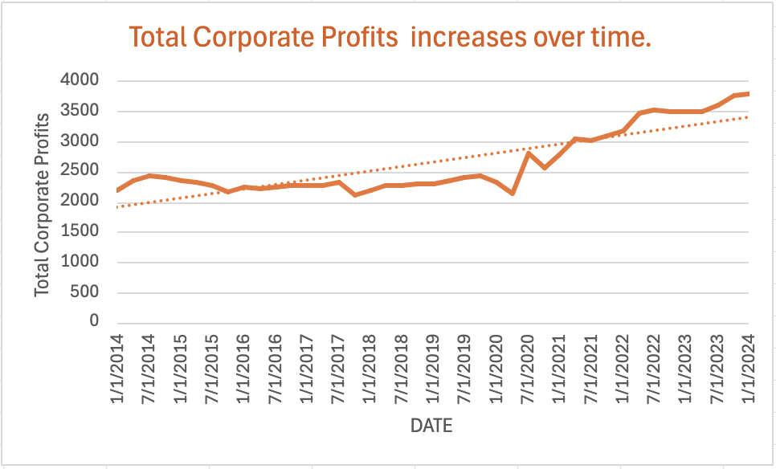
- Total corporate profits increase over the 10 year period.
- There are some significant declines in corporate profits The two major declines occurred in the span of end of quarter of 2019 to end of quarter of 2020. in the late quarter of 2019 to 2020. It is evident that the COVID-19 pandemic caused the sudden drop in corporate profits, with the lock-down, inflation, and slowdown of the economy. The economy healed in the first two quarters of 2020 as the lock-downs are alleviated, however declined again in the end of quarter of 2020.
- The private enterprises’ profits appear to be very steadily increasing from first quarter of 2022 to the first quarter of 2024. The total corporate profits appear to be higher than the average total corporate profits dotted line, signifying that the increase in total corporate profits are quite significant.
Scatterplot 1: Domestic Industries (Non-financial: Manufacturing) vs. Federal
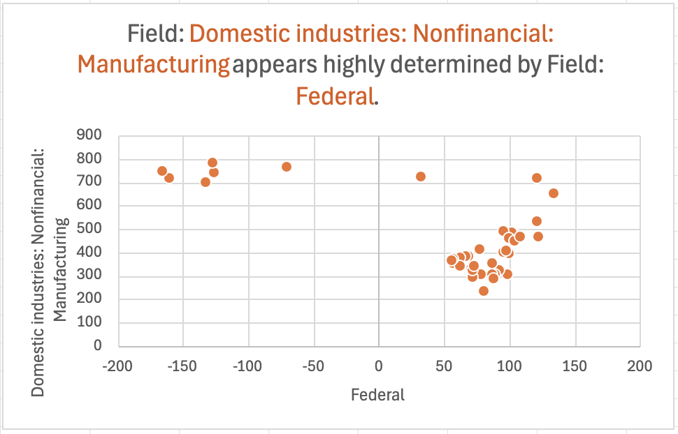
- “Domestic Industries: Non-financial: Manufacturing” appears to have an inverse relationship with “Federal”
As ‘Manufacturing’ is high at a range of 675-825 billion dollars, ‘Federal’ appears to be on hundreds of billion dollars loss. However, as ‘Manufacturing’ decreases to below 600 billion dollars, ‘Federal’s’ corporate profits improved to a range of 50-125 billion dollars.
Scatterplot 2: Wholesale trade vs. Transportation and warehousing
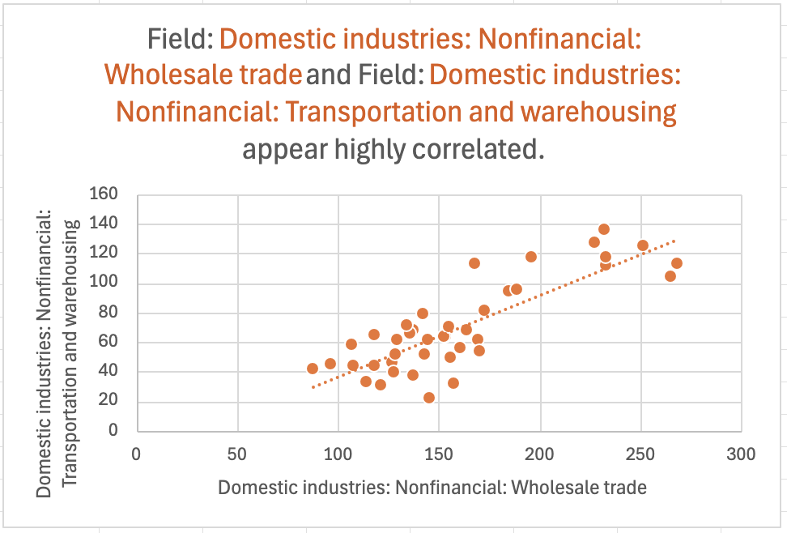
- As wholesale trade’s corporate profits increases, the corporate profits in the sub-sector of transportation and warehousing also increases.
The direct and proportional relationship of the two sub-sectors make sense, as wholesale trade involves purchasing goods in large quantities and reselling them in smaller quantities to businesses and other wholesalers, directly involving transportation and warehousing of the goods.
Barchart: Non-financial vs. Financial Domestic Industry
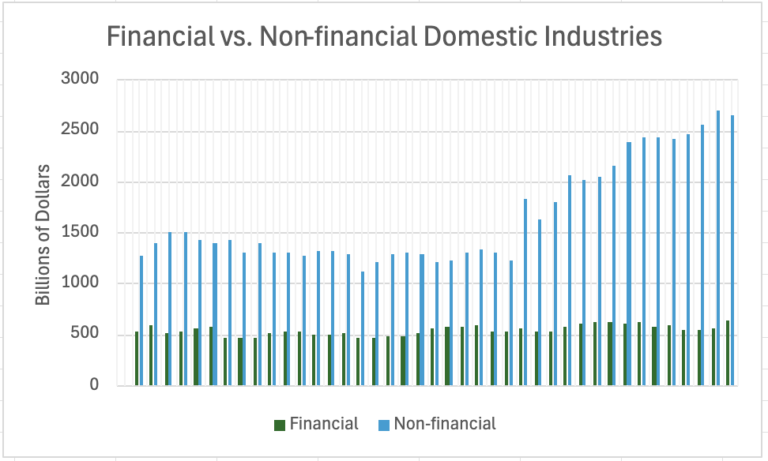
- The non-financial domestic industry’s corporate profits are growing more significantly compared to the financial domestic industry’s stable corporate profits The non-financial domestic industry are growing more rapidly, especially in the last half of the decade. The financial domestic industry has over 2500 billions of dollars of corporate profits in the first quarter of 2024. Meanwhile, the financial domestic industry appears to have stable corporate profits throughout the past 10 years, as its corporate profits are varying slightly from year to year and are stuck under 750 billion dollars.
Piechart: Non-financial makes up the majority of the domestic industry’s corporate profits
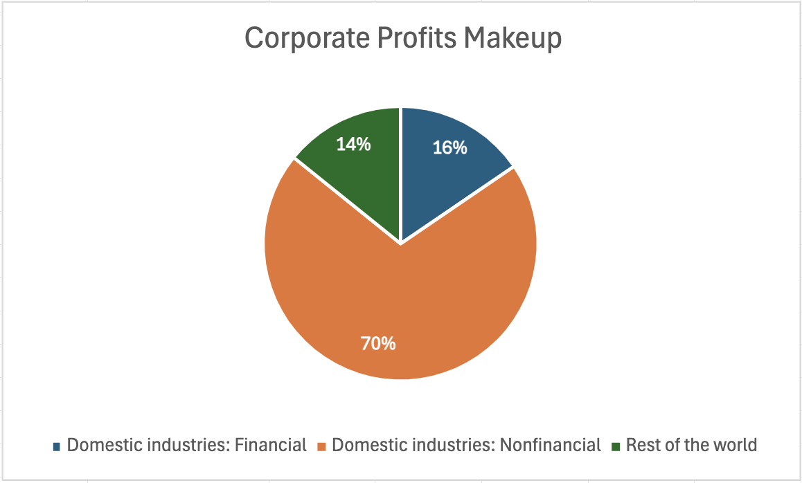
- Non-financial domestic industry takes 70% of the domestic industry’s corporate profits, while the rest of the world takes up only 14% of the domestic industry’s corporate profits.
- As stated in a study, non-financial corporations are responsible for a large share of the economic activity in most advanced economies (Tebrake & O’hagan, n.d.), which maakes sense as a lot of the important sub-sectors belong to the non-financial industry (including manufacturing of durable and non-durable goods, wholesale trade, retail trade, utilities, and information)
References
Tebrake, J., & O’hagan, P. (n.d.). Understanding Financial Accounts The financing of non-financial corporations. Retrieved August 31, 2024, from https://www.oecd-ilibrary.org/docserver/9789264281288-8-en.pdf?expires=1725145368&id=id&accname=guest&checksum=CE2ED779ABF58E8BEB69C041927BC309